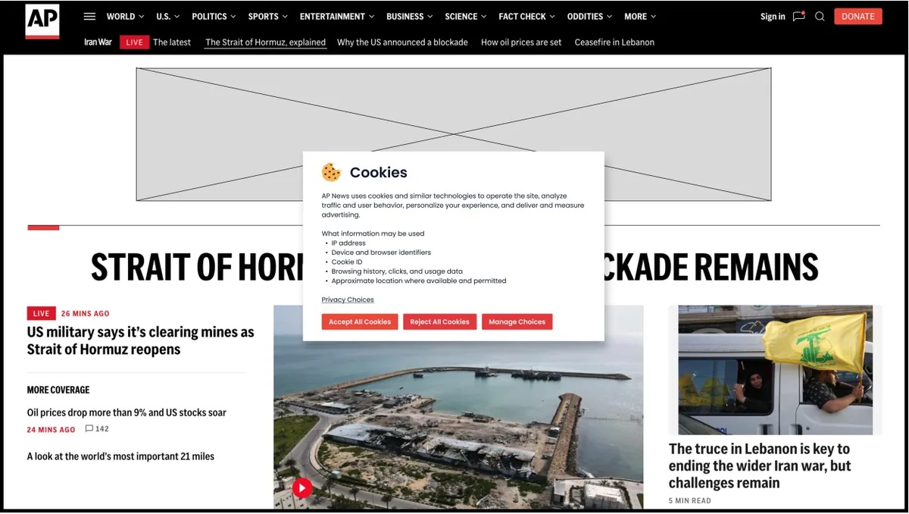
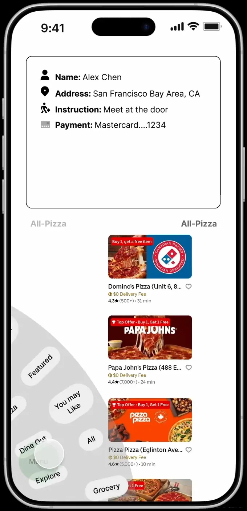

01 / SELECTED WORK
I redesigned AP News’s cookie consent flow so readers could accept, reject, or customize their preferences when they first arrived, and revisit those choices later.
View projectInteraction design / Portfolio 2026
I'm Haolin (Harley) Wu, an Interaction Design student at Sheridan College based in Mississauga, Ontario. I design user-centered web and mobile experiences, bringing together research, interactive prototyping, and front-end development.
Explore selected work01 / Selected projects

01 / SELECTED WORK
I redesigned AP News’s cookie consent flow so readers could accept, reject, or customize their preferences when they first arrived, and revisit those choices later.
View project
02 / SELECTED WORK
Freddy and I built a sci-fi movie finder that uses The Movie Database (TMDB) API. Visitors can pick from six moods or search by title, then browse posters, summaries, and movie details.
View project
03 / SELECTED WORK
I designed a one-handed ordering flow that keeps key controls within thumb reach. A circular dial helps users browse categories, while larger quantity buttons and a shortcut menu support ordering and checkout.
View project02 / Background & experience
Honours Bachelor of Interaction Design
Sheridan College · Oakville, Ontario
Expected graduation: April 2028
UX/UI Designer & Web Developer · Lead Momentum Media
Remote · April – July 2026
I led the design and development of a responsive company website, from research and wireframing to implementation and launch. I conducted user and competitor research, translated findings into site structure and content hierarchy, and developed the website using HTML, CSS, and JavaScript. I worked directly with the client to gather requirements and iterate on feedback across desktop, tablet, and mobile designs.
User research, competitive analysis, user flows, wireframing, prototyping, and iterative design.
Figma, ProtoPie, Framer, Adobe Creative Suite, HTML, CSS, and JavaScript.
Alongside my design studies, I have worked in customer service at Wo Thai in Oakville since August 2022. Coordinating orders, managing priorities, and resolving customer requests have strengthened my communication skills.
03 / How I think
I want to make digital experiences easier to understand and use. Whether I am working on privacy preferences or mobile navigation, I focus on how people move through an experience and make decisions.
My approach begins with research and an understanding of the task. I use user flows and wireframes to explore structure before refining the interface. Clear controls, useful feedback, and accessible interactions are priorities in the experiences I aim to create.
I see design as an iterative process shaped by feedback and collaboration. Working directly with a client has helped me connect user and business needs with practical design decisions. My experience with HTML, CSS, and JavaScript also helps me carry ideas from prototypes into responsive websites.
04 / Get in touch
Interested in my work? I'd be happy to talk about interaction design, prototyping, or web development.